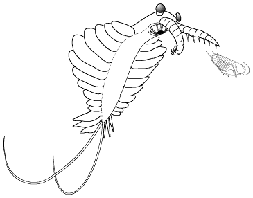
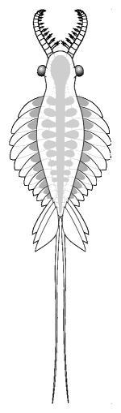
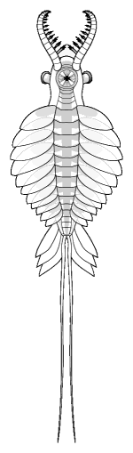
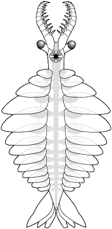
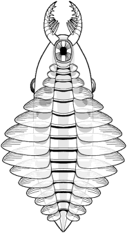
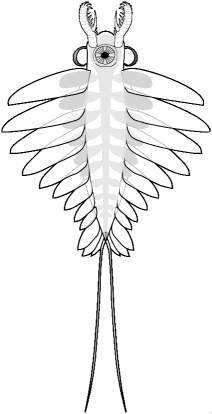
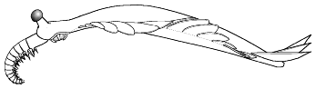
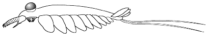
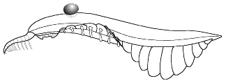
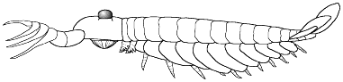

| Home |
· | History 1 |
· | Bauplan |
· |
Gallery 1 | · |
Links |
· |
||
| History 2 |
Species 1 |
Gallery 2 |
Buy now |
||||||||
| Species 2 |
Gallery 3 |
Telegram |
|||||||||
| Species 3 |
Twitter |
||||||||||
| Species 4 |
| 
. . Anomalocaris saron pursues a swimming trilobite. |
The studies of the mid
to late 1990s have presented us with intriguing revelations, and the most
complete fossils of anomalocaridids. The level of current research and
discovery is at its most promising since Whittington and Briggs (1982, 1985)
pieced together the first reasonable reconstruction of Anomalocaris.
The anomalocaridid bauplan (body plan)
|
| However, the anomalocaridid
bauplan appears to be more variable than previously assumed, and efforts
should be directed towards compiling a new, complete list of diagnostic
characters for the family. A revised list of diagnostic characters could
ultimately affect the relationship between the Anomalocarididae and other
possible families within Collins' (1996) proposed Order Radiodonta and
Class Dinocarida. Both of these taxa are important in the effort to place
anomalocarids and other similar problematic metazoans (e.g. Opabinia
regalis, Kerygmachela kierkegaardi) into an eventually coherent
phylogenetic context. Collins' proposal of the class Dinocarida is not
universally accepted by others working on anomalocaridids. Chen and Zhou
(1997) place anomalocaridids at the phylum level, but without providing
a formal, comprehensive diagnosis, or cladistic analysis.
Variation in anomalocarid characters:
Recent studies dramatically emphasize the variations found in the anterior grasping appendages among anomalocaridid genera. Described examples are the relatively stout crushing claws of Anomalocaris canadensis (Collins 1996); the fearsome impaling claws of Amplectobelua symbrachiata; and the long, slender claws of Anomalocaris saron (Chen et al. 1994; Hou et al. 1995). In contrast, the feeding appendages of Laggania cambria (Briggs' "Appendage F") with its long, delicate rake spines, seem more appropriate for a planktonic sweep-feeder than for a rapacious predator of armored arthropods (see discussion by Dzik and Lendzion 1988, and Nedin 1995). Similar appendages on other anomalocarid species (such as those of Anomalocaris briggsi from the Emu Bay Shale, Australia, known only from appendages with extensive comb rows on all but the first podomere endites) suggest that both predator and planktivore guilds may have been occupied by anomalocaridids (see Nedin 1995). |

dorsal view |
anterior appendages dorsolateral eyes elongate metameric body numerous lateral lobes dorsolateral fantail paired furcae
Anomalocaris saron Chengjiang, China |

ventral view |
Some variations in the Anomalocaridid Bauplan
| Anomalocaris canadensis Burgess Shale, Canada  |
Anomalocaris saron Chengjiang, China |
Laggania cambria Burgess Shale, Canada  |
Amplectobelua symbrachiata
Chengjiang, China  |
| Eyes anterior of mouth, narrow anterior body, heavily armed anterior appendages, strong fantail, lacking furcae, | Eyes lateral to mouth, largest mouth segments arranged diagonally, heavily armed anterior appendages, strong fantail, with furcae | Eyes far posterior of mouth, broad anterior body, weakly armed anterior appendages, ventral, transverse lobe support rods, lacking fantail and furcae | Eyes large, lateral to mouth, impaling basal spines on anterior appendages, fantail with furcae |
Some anomalocaridid morphotypes also show an increase in their degrees of tagmosis (body segmentation) and sclerotization (hardened exoskeleton), while others show the opposite. For example, Collins' complete specimens of Anomalocaris canadensis confirm that there was no evidence of trunk annulation or external segmentation preserved in this species. At least one purported anomalocaridid (Parapeytoia) had pairs of segmented gnathobasic legs associated with each trunk segment. Swimming lobes are thought to be expanded exopod elements of biramous limbs. Certain groups of anomalocaridids ceased developing biramous trunk appendages in favor of retaining only the lateral lobes. Interpreted in an arthropod context, this change translates into the loss of the endopod and the retention of the exopod. Those anomalocarids that retain segmentation, sclerotization, and endopods most strongly demonstrate arthropod origins, while taxa showing loss of endopods, poor sclerotization, and ambiguous tagmata demonstrate the derived extreme.
Organization of major grades of anomalocarids:
|  1. Sclerotized mouthparts and grasping appendages; body is 'naked', smooth-surfaced without visible trunk annulation or external segmentation; no apparent external gill-like structures; no body ornamentation or raised features of any kind; 13 pairs of lateral lobes; no jointed trunk appendages, and posterodorsal 'fantail' finlets arranged en echelon. (after Collins 1996) Example: Anomalocaris canadensis |
|  2. Sclerotized mouthparts and grasping appendages; diagonal striations on the lateral lobes (interpreted as veins by some authors); setae-like structures present on lateral lobes; two exsaggital ventral rows of serially-repeated, nodular structures; no confirmed trunk annulation or external segmentation; no jointed trunk appendages; tail furcae present; and posterodorsal 'fantail' finlets arranged en echelon. (After Chen et al. 1994; Hou et al. 1995). Examples: Anomalocaris saron, Amplectobelua symbrachiata (shown here) |
|  3. Sclerotized mouthparts and grasping appendages; body is 'naked', smooth-surfaced without visible trunk annulation or external segmentation; no apparent external gill-like structures; ventral, transverse, lateral lobe support 'rods' present. 14 pairs of lateral lobes; no jointed trunk appendages, evidence equivocal concerning presence of striations on the entire ventral surface of the lateral lobes; caudal end of body tapers to blunt extremity. No fantail or furcae. (after Collins 1996) Example: Laggania cambria |
|  4. Significantly sclerotized body including median sternites, ?dorsal lanceolate scales, gnathobasic biramous trunk appendages, grasping appendages; diagonal striations present on lateral lobes (after Hou et al. 1995). Other forms awaiting description by Ramskold (1995) could fall into this group, further expanding its diagnostic criteria. However, Chen et al 2004 suggests Parapeytoia may be more aligned with 'great-appendage' species such as Yohoia, Haikoucaris, Leanchoilia, Jiangfengia, and Fortiforceps than with anomalocaridids. See page on Parapeytoia for further discussion. Examples: Parapeytoia yunnanensis (shown here), Cucumericrus decoratus |
| [no image available] 5. Anterior tagmata formed of several carapace-like components bearing two sheathed claws on stalks. Below the carapaces, the jaws have an inner set of teeth, and are surrounded by pair of claws; trunk has 11 segments and a tail; gnathobasic, biramous trunk appendages (after Collins 1992, 1996). Example: Hurdia sp., Proboscicaris sp. |
| 6. Uncertain: Cassubia infercambriensis, Anomalocaris briggsi, and Anomalocaris pennsylvanica (incl. cf. pennsylvanica) are indeterminate forms based on grasping appendages only. Amiella ornata is a nomen dubium (Hou and Bergstrom 1997). The named species assigned to Hurdia (e.g. H. dentata, H. triangulata and H. victoria) and Proboscicaris (e.g. P. agnosta, P. ingens and P. obtusa) should all be regarded as nomina dubia, pending a full description of these genera. |
Anomalocaridid References (post 2000 references highlighted yellow)
Babcock, L.E. 1993. Trilobite malformations and the fossil record of behavioral asymmetry. Journal of Paleontology, 67, 217-229.
Babcock, L.E. and Robison, R.A. 1989. Preferences of Palaeozoic predators. Nature, 337, 695-696.
Briggs, D.E.G. 1979. Anomalocaris, the largest known Cambrian Arthropod. Palaeontology, 20, 631-664.
Briggs, D.E.G. 1994. Giant predators from the Cambrian of China. Science, 264, 1283-1284.
Briggs, D.E.G. and Mount, D.J.D. 1982. The occurrence
of the giant arthropod Anomalocaris in the Lower Cambrian of Southern
California, and the overall distribution of the genus. Journal of Paleontology,
56, 1112-1118.
Briggs, D.E.G. and Whittington, H.B. 1987. The affinities
of the Cambrian animals Anomalocaris and Opabinia. Lethaia
20, 125-6.
Briggs, D.E.G., B.S. Liebermann, J.R. Hendricks, S.L. Halgedahl & R.D. Jarrard. 2008. Middle Cambrian arthropods from Utah. Journal of Paleontology 82(2):238-254.
Budd, G.E. 1998. Stem group arthropods from the Lower Cambrian Sirius Passet fauna of North Greenland. in: R.A. Forety and R.H. Thomas (eds.) Arthropod Relationships. Chapman & Hall, London.
Chen, J. Waloszek, D. & Maas, A. 2004. A new
'great-appendage' arthropod from the Lower Cambrian of China and homology
of chelicerata chelicerae and raptorial antero-ventral appendages. Lethaia
37, 3-20.
Chen, J., Ramskold, L. and Zhou Guiquing, 1994. Evidence for monophyly and arthropod affinity of Cambrian giant predators. Science, 264, 1304-1308.
Chen, J. and Zhou Guiquing, 1997. Biology of the Chengjiang Fauna. Bulletin of the National Museum of Natural Science, 10, 11-105
Collins, D. 1992. Whither Anomalocaris? The search in the Burgess Shale Continues. Abstracts, Fifth North American Paleontological Convention, Chicago, Paleontological Society Special Publication, 6, 66.
Collins, D. 1996. The "evolution" of Anomalocaris and its classification in the arthropod class Dinocarida (nov.) and order Radiodonta (nov.). Journal of Paleontology, 70, 280-293.
Collins, D., Bergstrom, J. and Seilacher, A. 1991. Chengjiang Fauna. National Geographic Research and Exploration 7(2), 238-239.
Dzik, J. and Lendzion, K. 1988. The oldest arthropods of the East European Platform. Lethaia, 21, 29-38.
Henricksen, K.L. 1928. Critical notes upon some Cambrian arthropods described by Charles D. Walcott. Videnskabelige Meddelelser fra Dansk Naturhistorisk Forening: Khopenhavn, 86:1-20.
Hou Xianguang and Bergstrom, J. 1997. Arthropods of the Lower Cambrian Chengjiang fauna, southwest China. Fossils and Strata, 45, 1-116.
Hou Xianguang and Bergstrom, J. and Ahlberg, P. 1995. Anomalocaris and other large animals in the Lower Cambrian Chengjiang fauna of southwest China. GFF, 117, 163-183.
Hou, X.G., R.J. Aldridge, J. Bergstrom, D.J. Siveter, & X.F. Feng. 2004. The Cambrian Fossils of Chengjiang, China. Blackwell Publishing, Oxford, U.K. 233 pp.
Liebermann, B.S. 2003. A new soft-bodied fauna: The Pioche Formation of Nevada. Journal of Paleontology 77:676-692.
Nedin, C. 1995. The Emu Bay Shale, a Lower Cambrian fossil Lagerstätten, Kangaroo Island, South Australia. Memoirs of the Association of Australasian Palaeontologists 18, 31-40.
Ramskold, L. 1995. From characters to clades: interpreting Lobopodians and Anomalocaridids. 22. In Chen Junyuan, Edgecombe, G. and Ramskold, L. (eds). International Cambrian Explosion Symposium (April, 1995, Nanjing) (Programme and Abstracts). Nanjing Institute of Geology and Palaeontology, Academia Sinica, 48 pp.
Ramskold, L. 1997. Preservational folds simulating tergite junctions in tegopeltid and naraoiid Arthropods. Lethaia, 29,15-20.
Ramskold, L., Chen Junyuan., Edgecombe, D. and Zhou Guiquing, 1997. Cindarella and the arachnate clade Xandarellida(Arthropoda, Early Cambrian) from China. Transactions of the Royal Society of Edinburgh: Earth Sciences, 88,19- 38.
Rudkin, D.M. 1979. Healed injuries in Ogygopsis klotzi (Trilobita) from the Middle Cambrian of British Columbia. Royal Ontario Museum, Life Sciences Occasional Paper, 32, 1-18.
Walcott, C. D. 1911. Middle Cambrian Holothurians and Medusae. Cambrian geology and paleontology II. Smithsonian Miscellaneous Collections 57:41-68.
Whittington, H.B., and Briggs, D.E.G. 1982. A new conundrum from the Middle Cambrian Burgess Shale. 573- 575. In Mamet, B., and Copeland, M. J. (eds). Proceedings of the Third North American Paleontological Convention, Montreal, 2. Department of Geology, University of Montreal, and Geological Survey of Canada, Ottawa.
Whittington, H.B., and Briggs, D.E.G. 1985. The largest Cambrian animal, Anomalocaris, Burgess Shale, British Columbia. Philosophical Transactions of the Royal Society of London, Series B, 309, 569-609.